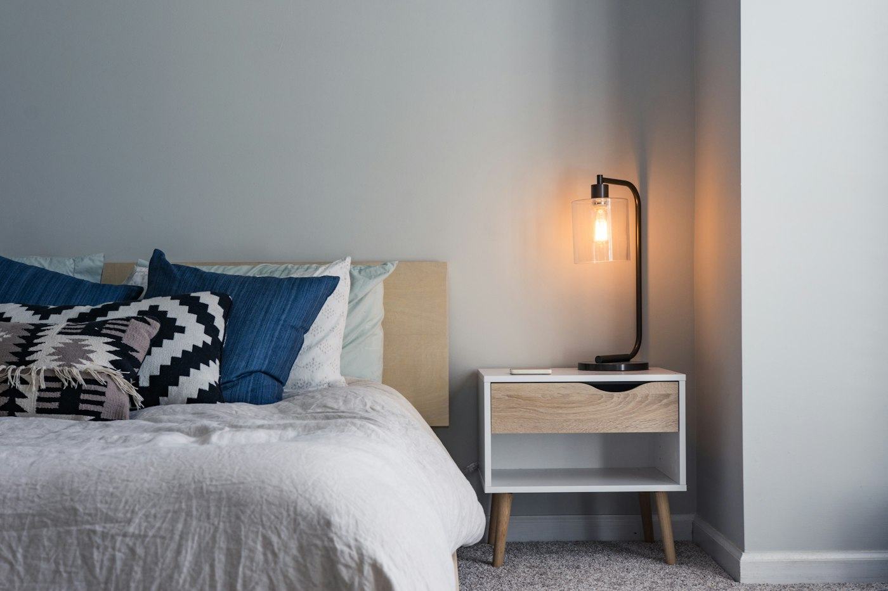
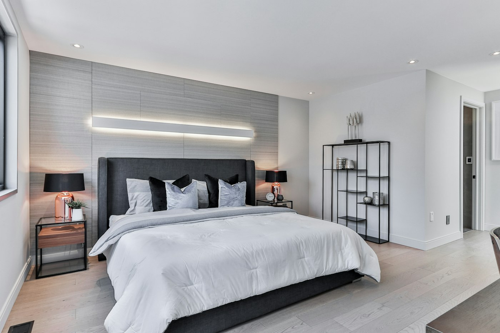

A small bedroom does not need to feel cramped, and it certainly does not need a renovation to feel better. Most small bedrooms feel tight for the same few reasons: the bed is in the wrong place, too much furniture is fighting for the same floor space, the light is flat, and everything without a home ends up on a chair or the floor. Fix those four things, in that order, and the same room can feel noticeably calmer, brighter and easier to live in.
This guide is written for beginners and for rooms where every centimetre matters. The ideas are grouped by what they change — layout, colour and light, storage, and wall decor — and almost all of them use furniture you already own, a few low-cost basics, or simple rearranging. You do not need to do everything here. Pick the two or three changes that solve the problems you notice most, live with them for a week, and then decide what, if anything, still needs doing. If you are starting from scratch, our Budget Bedroom Makeover Ideas guide covers the general makeover order first; this guide goes deeper on the small-room problems specifically.
Layout: Start With the Bed Position
The bed is the biggest object in the room, so where it sits decides everything else. In a small bedroom, a few centimetres in the wrong direction can block a drawer, crowd the door, or leave a strip of floor too narrow to use. Before buying anything, spend an evening trying the bed in a different position — it costs nothing, and it is the single change most likely to make the room feel bigger.
Put the bed against the longest wall
In most small bedrooms the best place for the bed is centred on, or pushed along, the longest uninterrupted wall, usually the wall opposite the door or the wall beside the window rather than the one facing it. A bed pushed against a wall frees up the centre of the room, which is the space you actually walk through every day. If two people use the bed, try to keep a gap on both sides, even a narrow one, so neither person has to climb over the other; if only one person sleeps there, pushing one long side against the wall is often the smartest trade, because it can free enough space for a small desk, a chair, or a proper wardrobe. Sketch the room on paper first, mark the door swing, the window, and anything that opens — drawers, wardrobe doors, the radiator — and check that each of them still opens fully in your new plan.
Keep one clear walking path
A small room feels much bigger when you can walk from the door to the bed, and from the bed to the wardrobe, without turning sideways. Choose that path first and protect it: nothing should sit in it, not even temporarily. A bedside table that sticks out into the path, a laundry basket by the door, or a chair angled into the walkway will make the whole room feel crowded even when the rest of it is tidy. If the path is still tight, look for the one piece of furniture that is doing the least work — often a second bedside table, an oversized chair, or a tall plant stand — and try the room without it for a week. Most people find they do not miss it, and the open floor is worth more than the extra surface.
Try the bed in a corner for a very small room
When a room is barely wider than the bed itself, a corner position can be the answer. Pushing the head of the bed into one corner and one long side against the wall leaves the rest of the floor open as a single usable area instead of two narrow strips you cannot use for anything. It works best for one sleeper, for a child’s room, or for a guest room. Make the corner bed feel deliberate rather than pushed aside: use a couple of cushions along the wall side as a soft backrest, keep the bedding neat and tucked, and put a small shelf or a wall-mounted light above the bed so the corner reads as a cosy sleeping nook instead of a leftover space. If you share the bed, test the corner layout for a few nights before committing — climbing out over your partner every morning is a high price for a few extra centimetres.
Choose furniture that earns its floor space
In a small bedroom every piece of furniture should do at least one useful job, and ideally two. A bedside table with a drawer beats an open stool that collects clutter. A bench at the foot of the bed can hold spare bedding inside it and give you somewhere to sit while you put on shoes. A small desk that folds away, or a narrow console that doubles as a dressing table, is worth more than a large desk you only use as a shelf. Before bringing a new piece into the room, measure the space it will occupy, including the space it needs around it — a drawer that cannot open, or a chair you cannot pull out, is not really furniture, it is an obstacle. And when two pieces do the same job, keep the smaller one.
Colour and Light: Make the Room Feel Bigger
Colour and light do not change the size of a room, but they change how big it feels. Pale, calm colours and clear daylight make walls seem further away; dark, busy patterns and a single harsh ceiling light do the opposite. This is the cheapest-feeling part of a small bedroom makeover, because paint, curtains and a lamp cost far less than new furniture and change the mood of everything already in the room.
Keep the palette light and limited
Choose two or three colours and let them repeat across the bedding, the curtains, the rug and the wall art, so the eye moves smoothly around the room instead of stopping at every competing pattern. Light, muted colours — soft white, pale grey, warm cream, dusty sage or pale blue — reflect more light and make the walls feel further apart. That does not mean the room has to be all white: one deeper colour, used in small amounts like a throw, a cushion or a framed print, gives the room character without closing it in. If painting is an option, painting the walls and the ceiling the same pale colour removes the hard line where they meet and can make a low ceiling feel a little higher. If you rent, the same effect comes from pale bedding, light curtains and a light-coloured rug, with the deeper colour kept to the small accents. For the full approach to choosing a palette, see the colour guidance in our Budget Bedroom Makeover Ideas guide.
Let the window do the work
Daylight is the best tool a small bedroom has, so do not block it. Keep the window clear of tall furniture, wash the glass, and choose curtains that can be pulled fully clear of the glass during the day. Curtains hung a little higher and wider than the window frame make the window look larger, which makes the wall — and the room — feel larger too. A sheer or light-coloured curtain softens the light without shutting it out, and a washable rug in a pale tone underfoot keeps the floor feeling open. If the window faces a wall or a neighbour, a mirror is the next best thing: place it where it reflects the window, not where it reflects clutter, and it will borrow daylight into the darker corner of the room while doubling the sense of space.

Use warm, low light in the evening
A single bright ceiling light flattens a small room in the evening and makes every corner visible at once, which is rarely flattering. A small bedside lamp with a warm-toned bulb, placed at about shoulder height when you are sitting in bed, creates a pool of soft light and lets the rest of the room fall into gentle shadow — the room instantly feels cosier and, oddly, larger, because you are no longer looking at all of it at once. If there is no space for a bedside table, a wall-mounted light, a clip-on reading light, or a small shelf with a lamp on it does the same job without taking up floor space. Keep cords tucked behind furniture and out of the walking path, and choose LED bulbs in a warm tone rather than a harsh daylight tone for the evening. A short string of warm fairy lights along a shelf or headboard can add the same soft glow for very little money, and battery-operated ones avoid the need for a spare socket.
Storage: Use the Walls and the Space Under the Bed
Storage is where small bedrooms are won or lost. A room with too little storage does not just look messy — it slowly fills every surface until there is nowhere to put a book or a glass of water. The fix is rarely a bigger wardrobe. It is usually a set of small, specific homes for the things that keep ending up on the floor: clothes, chargers, books, spare bedding, and the bits and pieces that migrate into the bedroom from the rest of the house.
Start under the bed
The space under the bed is often the largest empty storage area in a small bedroom, and it is free. Measure the clearance under the frame first, then use flat boxes or shallow containers that slide in and out easily — out-of-season clothes, spare bedding, and shoes are ideal here, because you do not need them every day. Label the boxes on the side you see when they are stored, so you are not pulling out three boxes to find one item. If the bed sits very low, bed risers can add useful clearance, but check that the bed stays stable and safe first, and do not raise it so high that getting in and out becomes awkward. Vacuum under the bed before the boxes go in, and keep the area tidy: a storage space that becomes a dumping ground is worse than no storage at all.
Go up the walls
When the floor is full, the walls are the only direction left. A shelf above the bed, a narrow shelf beside the door, or a row of hooks behind the door can hold books, plants, hats, bags and tomorrow’s clothes without taking a single centimetre of floor. Choose shelves that are deep enough for what they will hold — a shelf that is too shallow drops things — and fix them properly into the wall, following the fixings’ instructions and checking what your walls are made of before you drill. Renters can use the same idea without drilling: leaning shelves, a tall narrow bookcase, adhesive hooks for light items, and an over-door hook rail all add vertical storage that comes down cleanly. Our Renter-Friendly Decor category covers no-damage options in more depth, and the storage ideas there pair well with this guide.

Give every everyday item a home
Walk through your evening and morning routines and list what you actually pick up and put down: phone and charger, book, glasses, water, jewellery, tomorrow’s clothes, keys, bag. Each of those needs a small, obvious home within arm’s reach of where you use it — a tray on the bedside table, a hook behind the door, a small basket on a shelf, a box on top of the wardrobe. When an item has no home, it ends up on the nearest flat surface, and in a small room that surface is usually the bed or the floor. Matching baskets or simple lidded boxes hide visual clutter while keeping things reachable, and a single rule helps more than any container: if something new comes into the bedroom, something old leaves it. That one-in, one-out habit is what keeps a small room feeling finished after the makeover week is over.
Hide the clutter you cannot remove
Some things have to live in the bedroom even though they are not pretty: chargers and cables, ironing, paperwork, spare toiletries, the laundry basket. The trick is to contain them rather than display them. A small box with a lid beside the bed hides chargers and cables. A fabric laundry bag hung on a hook looks tidier than an open pile. A single drawer — even a small one — given over to paperwork stops it spreading across the dresser. And if the wardrobe is bursting, try the simplest test first: take everything out, put back only what you have worn in the last few months, and store or pass on the rest. Most small bedrooms gain the most space not from new storage, but from owning a little less in that room.
Wall Decor: Decorate Up, Not Out
In a small bedroom the walls are your best decorating surface, because decorating them costs no floor space at all. The mistake is to treat every wall as a display: too many frames, shelves and hangings make a small room feel busy and smaller. One wall, decorated well, does more than four walls decorated a little.
Choose one focal wall
Pick the wall you see first when you walk in — usually the wall behind the bed — and make that the decorated one. A single large print, a pair of matching frames, or a small gallery of three to five pieces above the headboard gives the eye somewhere to land and makes the room feel finished. Keep the other walls mostly clear, with at most one small frame or a mirror, so the focal wall stands out. Plan the arrangement on the floor first, or tape paper templates to the wall, keep the spacing roughly even, and hang the centre of the arrangement around eye level when standing. Frames do much of the work of making inexpensive art look deliberate: a plain frame, a fabric offcut, a favourite photo or a simple line drawing all look intentional once they are framed and hung straight.
Use shelves as decor, not just storage
A shelf can be both storage and decoration if you treat it that way. Leave breathing space on it: a few books standing upright, one small plant, one framed photo, and some empty space between them reads as styled; a shelf packed edge to edge reads as a cupboard. Hang the shelf a little higher than you think — above the headboard, or above a desk — so it decorates the wall without crowding the furniture below it. A trailing plant on a high shelf softens the corner of a small room beautifully, and a plant that hangs down takes up no surface at all. If you are unsure what to put on a shelf, start with three things of different heights and leave the rest empty; you can always add more later, and a half-empty shelf looks calmer than a full one.
Lean, don’t drill, when space is tight
Leaning art against the wall on top of a dresser, leaning a mirror in a corner, or resting a framed print on a shelf gives you the look of wall decor without fixings, holes, or commitment — and you can move it in seconds when the layout changes. A leaning mirror is especially useful in a small bedroom: it fills an awkward vertical space, reflects light, and makes the room feel deeper. Keep the mirror angled toward something pleasant, a window or a tidy shelf, because it doubles whatever it faces. For renters, leaning pieces, removable strips and picture ledges are the safest route, and our DIY Wall Decor category has gallery-wall and handmade-art ideas that work at a small scale too.
Where to Start: A Simple Order That Works
If the full list feels like a lot, follow this order. Each step builds on the one before it, and you can stop after any step with the room already improved.
- Clear and measure. Empty the surfaces, clean the room, and measure the bed, the door swing and the wardrobe clearance. Write the numbers in your phone.
- Move the bed. Try the bed against the longest wall, or in a corner, and protect one clear walking path. Live with it for a few nights before deciding.
- Choose your palette. Pick two or three light, calm colours from something you already own and like, and let them guide the bedding, curtains and rug.
- Fix the light. Clear the window, hang curtains high and wide, add a mirror if the room is dark, and place one warm bedside lamp.
- Sort the storage. Use the space under the bed, add one shelf or hook rail, and give every everyday item a small home.
- Decorate one wall. Hang the art or gallery above the bed, style one shelf, and leave the other walls mostly clear.
- Edit, then stop. Remove one thing that is not earning its place. A small room that is a little empty feels calm; a small room that is a little full feels crowded.
Mistakes to Avoid in a Small Bedroom
Most small-bedroom makeovers go wrong in the same few ways, and all of them are easy to avoid once you know to look for them.
- Buying furniture before measuring. A bedside table, rug or wardrobe that is a few centimetres too big can block a drawer or a door. Measure the room and the furniture, including the space it needs around it, before you buy.
- Filling every wall and surface. A small room needs empty space to feel calm. Leave at least one wall mostly clear and at least one surface — the top of the dresser, or one bedside table — mostly empty.
- Too many small pieces. Five small cushions, three small frames and four small ornaments read as clutter. One larger cushion, one larger print and one plant usually look better and are easier to keep tidy.
- Ignoring the ceiling light. A single harsh ceiling bulb makes a small room feel flat and stark in the evening. Add a warm bedside lamp and use the ceiling light less.
- Dark, busy bedding in a dark room. Heavy patterns and dark colours absorb light. In a room with little daylight, pale bedding with one stronger accent colour keeps the bed — the biggest thing in the room — feeling light.
- Storage with no system. Boxes and baskets only help if you know what is in them. Label them, keep a list of what lives where, and revisit them every few months so they do not become hiding places for things you no longer need.
Helpful Tips for Beginners
- Shop your home first. A lamp, a mirror, a basket or a framed print from another room costs nothing and often suits the bedroom better than something new.
- Buy slowly. Live with each change for a few days before buying the next thing. Small rooms punish impulse buys, because there is nowhere to hide a mistake.
- Keep one calm zone. Choose one spot — the bedside table, or the wall opposite the bed — and keep it mostly clear. It gives your eyes somewhere to rest.
- Use matching containers. Two or three matching boxes or baskets look tidier than five different ones, even when they hold exactly the same things.
- Take a before photo for yourself. Stand in the doorway and photograph the room before you start. It is the easiest way to see which change actually made the difference.
- Check rental rules before drilling. If you rent, ask or check your agreement before fixing shelves or hooks to the wall, and prefer removable strips, leaning pieces and freestanding storage where fixings are not allowed.
Frequently Asked Questions
How can I make my small bedroom look bigger?
Start with the layout: put the bed against the longest wall, keep one clear walking path, and remove the one piece of furniture that does the least work. Then keep the palette light and limited, clear the window so daylight reaches the room, and hang a mirror where it reflects that daylight. Those four changes cost little and usually matter more than buying anything new.
What colour makes a small bedroom look bigger?
Light, muted colours — soft white, pale grey, warm cream, dusty sage or pale blue — reflect more light and make walls feel further apart. Use the palest colour for the largest areas, such as the walls and bedding, and keep stronger colours to small accents like a cushion, a throw or a framed print, so the room stays calm rather than busy.
Where should I put the bed in a small bedroom?
Usually against the longest uninterrupted wall, centred on it if two people use the bed, or pushed into a corner if one person sleeps there and the room is very small. Whichever you choose, check that the door, the wardrobe and the drawers still open fully, and that you can walk from the door to the bed without turning sideways.
How do I add storage to a small bedroom without it looking cluttered?
Use space that is already empty: flat boxes under the bed, shelves and hooks on the walls, and the back of the door. Choose closed storage — boxes with lids, baskets, drawers — for everyday clutter, and keep open shelves half-empty so they read as decor rather than overflow. Label the boxes so you can find things without emptying them.
I rent my home. Which of these ideas are renter-friendly?
Most of them. Rearranging furniture, pale textiles, curtains, lamps, leaning mirrors, baskets, freestanding shelves and removable hooks change nothing permanently. Check your rental agreement before painting or drilling, and prefer removable strips, leaning pieces and over-door storage where fixings are not allowed.
Conclusion
A good small bedroom makeover is not about squeezing more things into less space. It is about giving the room a clear layout, a calm palette, honest daylight and warm evening light, and a home for everything that lives there. Work through the ideas in this guide in the order that suits your room — bed first, then light, then storage, then one decorated wall — and stop as soon as the room feels good to wake up in. When you are ready for more, explore the full Bedroom Makeover category, including budget bedroom ideas, cozy bedroom ideas and DIY bedroom storage, or start with our first guide, Budget Bedroom Makeover Ideas That Make a Big Difference.